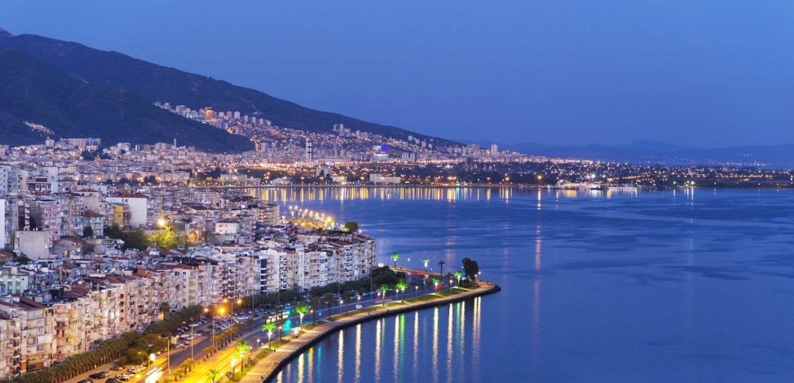

İzmir, doğal güzellikleri ve tarihi mekânlarıyla gezilecek pek çok yere sahiptir. Kordon Boyu, deniz kenarında yürüyüş yapmak ve manzaranın tadını çıkarmak isteyenlerin ilk adresidir.
Konak Meydanı ve Saat Kulesi, şehrin sembollerindendir. Alsancak, renkli sokakları ve kafeleriyle ziyaretçileri cezbeder. Şirince ve Efes Antik Kenti ise tarih ve doğayı bir arada sunar. İzmir, Türkiye'nin batısında Ege Bölgesi'nde yer alan tarihi ve turistik açıdan zengin bir şehirdir. Hem tarihi dokusuyla hem de doğal güzellikleriyle ziyaretçilerini cezbeden İzmir'de mutlaka görülmesi gereken birçok yer bulunmaktadır. İşte bu yerlerden bazıları: Kemeraltı Çarşısı: İzmir'in tarihi ve kültürel dokusunu yansıtan Kemeraltı Çarşısı, daracık sokakları, çeşitli dükkanları ve yöresel lezzetleriyle alışveriş tutkunlarının ve tarih meraklılarının ilgisini çeker. Kadifekale: Şehrin simgelerinden biri olan Kadifekale, İzmir Körfezi'ne hakim bir konumda bulunur. Antik dönemden kalma kalıntıları ve muhteşem manzarasıyla tarihe ve doğaya ilgi duyanların uğrak noktasıdır. Alsancak: İzmir'in merkezi konumlarından biri olan Alsancak, canlı ve dinamik bir semttir. Burada bulunan kafeler, restoranlar, mağazalar ve gece hayatıyla şehrin kalbinin attığı bir noktadır. Konak Meydanı ve Saat Kulesi: İzmir'in simgelerinden biri olan Saat Kulesi, 1901 yılında inşa edilmiştir ve şehrin merkezi konumlarından biri olan Konak Meydanı'nda bulunur. İzmir Saat Kulesi: 1901 yılında inşa edilen Saat Kulesi, Konak Meydanı'nın sembolü haline gelmiştir. Eşsiz mimarisi ve tarihi değeriyle ziyaretçilerini cezbeder. İzmir Arkeoloji Müzesi: Antik çağdan kalma eserlerin sergilendiği İzmir Arkeoloji Müzesi, tarih meraklılarının ilgisini çeker. Müzede Helenistik, Roma ve Bizans dönemlerine ait birçok eser bulunmaktadır. Asansör: İzmir'in tarihi semtlerinden Karataş'ta bulunan Asansör, şehrin panoramik manzarasını izlemek için popüler bir noktadır. Aynı zamanda tarihi bir yapı olan Asansör, şehrin simgelerinden biridir. İzmir Kordon Boyu: Şehrin en popüler noktalarından biri olan Kordon Boyu, sahil şeridi boyunca uzanır ve yürüyüş yapmak, bisiklete binmek veya deniz manzarasının keyfini çıkarmak isteyenler için ideal bir noktadır. Eski Smyrna Agorası: İzmir'in antik dönemden kalma önemli yapılarından biri olan Smyrna Agorası, tarihi ve arkeolojik açıdan büyük bir öneme sahiptir. Foça: İzmir'e yaklaşık 70 kilometre uzaklıkta bulunan Foça, tarihi ve doğal güzellikleriyle ünlü bir sahil kasabasıdır. Burada bulunan antik liman kalıntıları ve doğal plajlar ziyaretçilerini cezbeder. Efes Antik Kenti: İzmir'e yaklaşık 80 kilometre uzaklıkta bulunan Efes Antik Kenti, dünyanın en önemli antik kentlerinden biridir. Büyük bir tarihi ve arkeolojik zenginliği barındıran Efes, UNESCO Dünya Mirası Listesi'nde yer alır. Şirince Köyü: İzmir'e bağlı olan Şirince Köyü, tarihi dokusu, şirin sokakları ve ünlü şaraplarıyla ünlüdür. Burası, doğal güzellikleri ve tarihi atmosferiyle ziyaretçilerini büyüler. Bergama Antik Kenti: İzmir'e yaklaşık 100 kilometre uzaklıkta bulunan Bergama Antik Kenti, Helenistik ve Roma dönemlerine ait birçok tarihi esere ev sahipliği yapar. İzmir Doğal Yaşam Parkı: Şehir merkezine yakın bir konumda bulunan İzmir Doğal Yaşam Parkı, geniş bir alan üzerine kurulmuş ve birçok farklı hayvan türünü barındıran modern bir hayvanat bahçesidir. Urla: İzmir'in batısında bulunan Urla, şarap bağları, tarihi köyleri ve doğal plajlarıyla ünlü bir ilçedir. Burası, sakin bir tatil yapmak isteyenler için ideal bir destinasyondur.